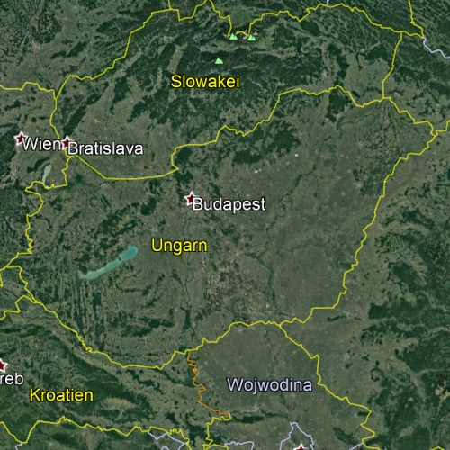

>
>


Gindra Fanny - marr. Schwatschek (1818 - 1900)
Ungarn


Hello, my name is Fanny and I am a a_cook. I was born in 1818 in Ungarn. Why don't you watch my slide show?
 Ref. No. 1922
Ref. No. 1922
1 step back
Index by Surnames
Index by profession
Index by years
Index by location
guided Tours
Structure
Predecessors
Geography
Slide show
Documents
Family pictures
Wechsle zu Deutsch
Play / Stop
Play / Stop
The exact date of birth is not known, but Gindra Fanny was propably born 1818 in Ungarn as daughter of
- Gindra Anton, born in 1810 from Ungarn
She had 2 bretheren: Anna, born in 1845 and Hermine, born in 1849. She was married to Mr. Schwatschek, born in 1814 from Ungarn. She was a_cook and the couple lived in Wien_Burggasse.
She was a gifted cook and left the family a plethora of recipes. She must have learned the cooking trade as a young girl in the household of Field Marshal Radetzki. She sent him doughnuts to Paris and got a nice jar with her name from him as a souvenir. One of Radetzki's mercenaries must have been so in love with her that he took one of her little shoes with him to all battles in his tournister.
As a souvenir after the death of the Field Marshal in 1858, she took a small pancake pan with her and moved to Vienna. There she entered the service of one of the most famous Dancers of the 19th century - Fanny Elssler. Evidently the Field Marshal had given her a good report. She did her shopping in a horse-drawn carriage and had several kitchen helpers. At the age of 48, however, she voluntarily left this service and was discharged in good health on 31.3.1866 - according to letter from Fanny Elssler. Then she served a countess Kinsky in Bruenn and lent money to famous gentlemen such as Charlotte Wolter - a famous actress - who could not return it immediately because of the coming Christmas expenses (see Brief).
She then withdrew to Wien in Nikolsdorfergasse near her niece, whose daughter she took to school and generally pampered (among other things with a doll's stove with 3 spirit flames or Meissen doll dishes!)
She kept 3-4 cats and many more bugs, which she pretended not to notice because of her bad eyesight and a lack of specs. With her niece she was never allowed to sit on a divan and her umbrella was first unbugged and then stretched outside the apartment.
In the old people's home in Genzgasse, she was visited by her niece almost every day, even the day before her death, where she pointed out where her wordly goods and cash was to be found. When she died the next day, everything was gone. The pious sisters said that this had been used for Holy Masses in the spirit of the deceased.
She died at the age of 82 years in the year 1900 in Altersheim. Mourning were amongst others her sisters Anna Binder and Hermine, her nephew Hans Binder, her nieces Emilia Mock and Johanna Hausner.
She lived in the epoch of Classicism and as a young girl under the reign of the Emperor Ferdinand I of Habsburg-Lothringen. During her life there were many wars, amongst them the Sardinian-Austrian war, the Hungarian Revolution and the Sardinian war. Amongst important discoveries and inventions during her time are the mouth organ, the telephone, the periodic system of chemical elements and the dynamo.